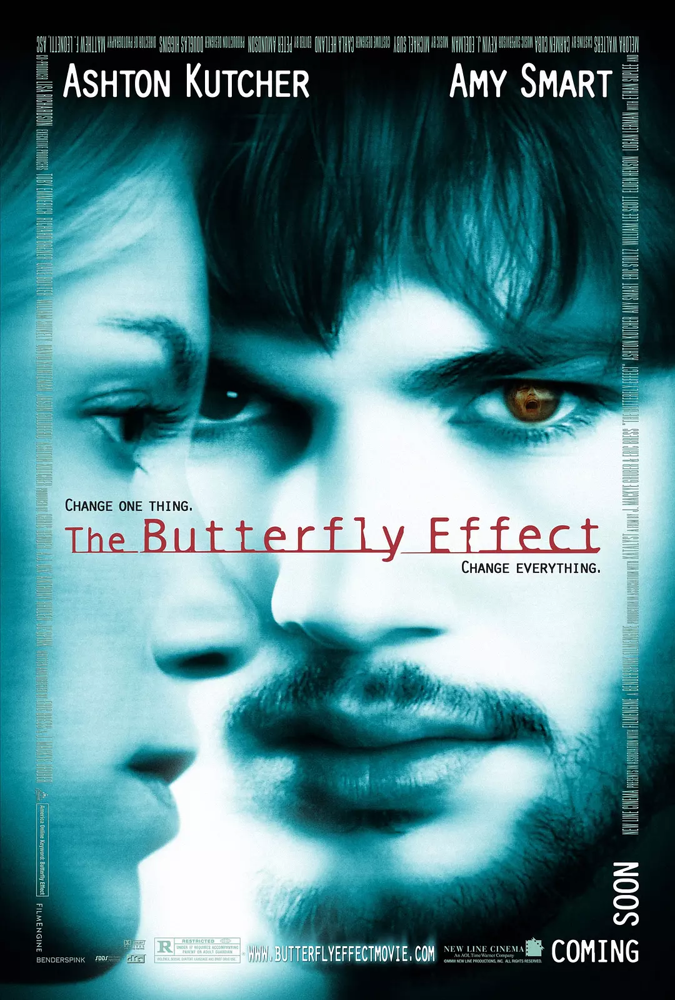
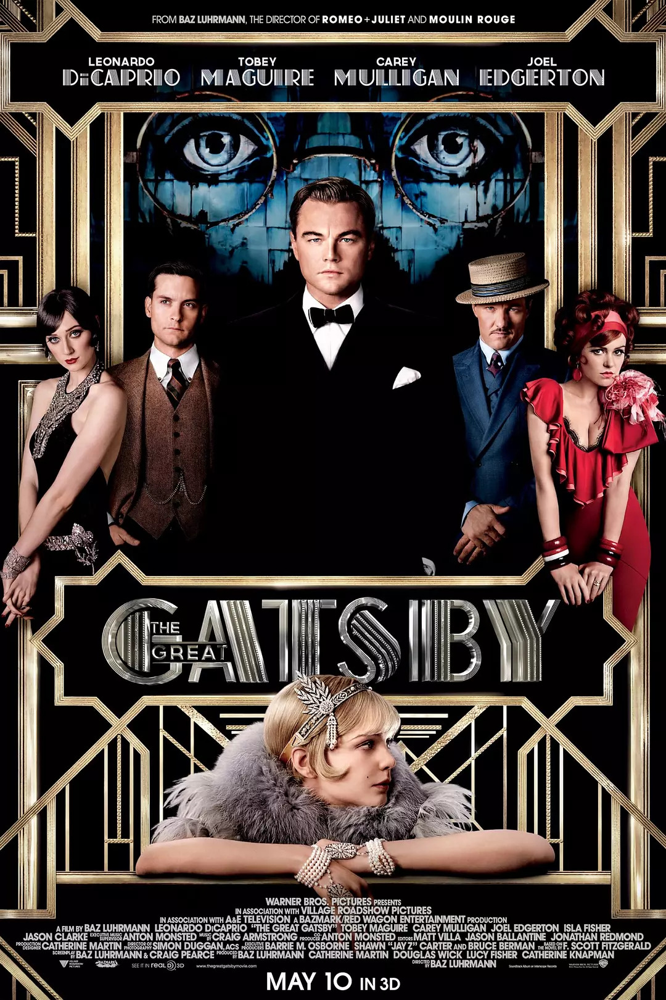
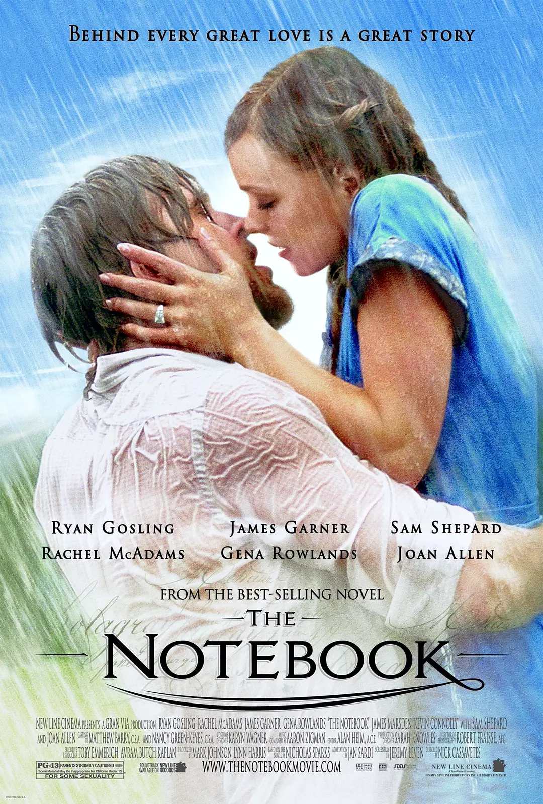

蝴蝶效应

伊万曾经有一个糟糕的童年，因为他行为闯下了大祸，令他童年充满不堪回忆的往事。
而事实上，他确实只是依稀记得一点可怕的情景，这些情景一直纠缠着他的正常生活。
伊万接受心理学家建议，把琐碎生活记在记事本里，却偶然发现通过记事本回到过去。
这时他才清楚记起，童年时候的自己做了那么多的错事。他幻想着用现在的意识，潜入童年的身体，
去弥补种种过失给人们带来的伤害，尤其是希望与当年暗恋的凯西最终走回一起。
然而他一次次的跨越时空的更改，只能越来越招致现实世界的不可救药。一切就像蝴蝶效应般，牵一发而动全身。
豆瓣详情
忠犬八公的故事
八公是一条谜一样的犬，因为没有人知道它从哪里来。教授帕克在小镇的火车站拣到一只走失的小狗，
冥冥中似乎注定小狗和帕克教授有着某种缘分，帕克一抱起这只小狗就再也放不下来，
最终，帕克对小狗八公的疼爱感化了起初极力反对养狗的妻子卡特。
八公在帕克的呵护下慢慢长大，帕克上班时八公会一直把他送到车站，下班时八公也会早早便爬在车站等候，
八公的忠诚让小镇的人家对它更加疼爱。有一天，八公在帕克要上班时表现异常，居然玩起了以往从来不会的捡球游戏，
八公的表现让帕克非常满意，可是就是在那天，帕克因病去世。帕克的妻子、女儿安迪及女婿迈克尔怀着无比沉痛的心情埋葬了帕克，
可是不明就里的八公却依然每天傍晚五点准时守候在小站的门前，等待着主人归来……
豆瓣详情
你的名字

在远离大都会的小山村，住着巫女世家出身的高中女孩宫水三叶。校园和家庭的原因本就让她充满烦恼，
而近一段时间发生的奇怪事件，又让三叶摸不清头脑。不知从何时起，三叶在梦中就会变成一个住在东京的高中男孩。
那里有陌生的同学和朋友，有亲切的前辈和繁华的街道，一切都是如此诱人而真实。
另一方面，住在东京的高中男孩立花泷则总在梦里来到陌生的小山村，以女孩子的身份过着全新的生活。
许是受那颗神秘彗星的影响，立花和三叶在梦中交换了身份。他们以他者的角度体验着对方的人生，这期间有愤怒、有欢笑也有暖心。
只是两人并不知道，身份交换的背后隐藏着重大而锥心的秘密……
豆瓣详情
了不起的盖茨比

1922年的春天，作家尼克满怀希望离开家乡，随淘金热潮来到纽约这个新兴的城市，虽然这里爵士乐流行，股票飞涨，
但是贫富两极分化，人们沉沦在纸醉金迷中。尼克为了追寻美国梦，放弃写作而进入证券市场，并搬入纽约附近的海湾居住，
成为了神秘富豪盖茨比的邻居。而海湾的对岸住着尼克的表妹黛西和她的贵族丈夫汤姆，尼克不仅被邀请去赴宴，
之后汤姆还带着他去找情妇寻欢，尼克渐渐迷失在这个充满魅力，以及富豪编制的假象、爱与谎言的世界中。
但是只有盖茨比最特别，他是唯一让尼克感到在这个迷失城市里充满希望的人。
尼克被邀请参加了盖茨比豪宅中的盛宴，还发现盖茨比心中的秘密，原来他一直深爱着黛西，
即使她没等到他战后归来，转而嫁给富豪汤姆，盖茨比一直深信他们的爱情矢志不渝。尼克作为盖茨比与黛西爱情的见证者，
终于在盖茨比被谋杀之后，看清了这个上流社会的虚情寡义，决心远离喧嚣、冷漠、虚假的大都市，黯然回到故乡……
豆瓣详情
恋恋笔记本

一个浸润着鲜红与纯白的爱情故事，写在一本洒满昏黄的笔记本上，被一位老先生，一遍一遍的讲述。老太太总是静静的听着，
好奇的追问结果。在一家疗养院，这样不变的场景每天都会上演。笔记本上，秀美的字迹，记载着发生在那个夏天的爱情。
艾莉是富有人家的千金，她随家人来到小镇避暑。在一个充满梦幻的游乐场，邂逅了诺亚。诺亚没有钱，却活的很快乐。
艾莉在他那学会了自由，得到了欢笑，两人很快热恋起来。然而在艾莉父母的阻挠下，相爱的两个人，就被分开在夏天结束的那一刻。
随着诺亚的365封信被偷偷藏起，艾莉在7年后终于放弃了等待。
就在她要步入教堂的前一天，突然在报纸上看到了诺亚曾许诺给自己建造的白色房子。一切记忆，全部苏醒……
也许，应该苏醒的，不是故事中的，而是听故事的人。
豆瓣详情